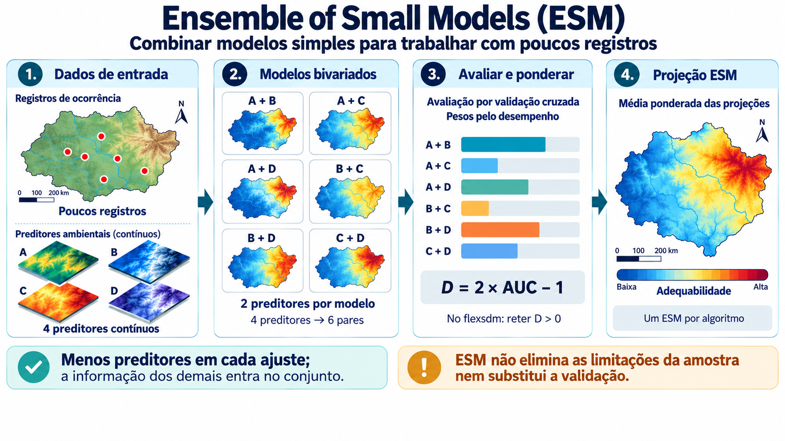

CAPÍTULO 15 · M → A → P · Ensemble of Small Models
Uma segunda espécie: aprender com pouca informação
Modelos pequenos reduzem a dimensão de cada ajuste, sem criar dados novos.
Base no curso: slides 411–416.
Uma colega traz Amanoa cupatensis como segundo estudo. O grupo encontra menos informação e decide examinar modelos bivariados. O desafio não é encaixar a espécie no workflow anterior, mas ajustar a complexidade à pergunta e ao que os dados permitem.

No Ensemble of Small Models, diferentes pares de preditores dão origem a modelos pequenos. O conjunto permite combinar relações simples. Nos métodos usados no curso, a ponderação dos componentes se baseia em desempenho, por Somers’ D; componentes sem peso positivo podem não ser retidos. Isso precisa ser conferido nos objetos retornados.
Duas combinações distintas
Primeiro há a combinação dos modelos bivariados dentro de cada ESM: Maxent, GLM e GAM têm seus próprios conjuntos. Depois, o roteiro combina por mediana as três projeções contínuas. Essa mediana não é a mesma operação que a ponderação interna dos componentes.
# ESM requer mais de duas variáveis para formar os modelos bivariados.
if (length(predictors.names) < 3L) {
stop("ESM requer pelo menos três preditores após a seleção de variáveis.")
}
# Ensemble of Small Models
set.seed(1968)
# Ajuste Maxent
emax <- esm_max(
data = rbind(presence.points.model, pseudoabs.points.model),
response = "pr_ab",
predictors = predictors.names,
partition = ".part",
thr = "max_sens_spec",
background = background.points.model,
classes = "default",
regmult = 1.5,
clamp = TRUE,
pred_type = "cloglog"
)# Mediana das projeções contínuas dos ESM
esm_pred <- c(
emax_pred[[1]][[1]],
eglm_pred[[1]][[1]],
egam_pred[[1]][[1]]
)
esm_median <- terra::app(
esm_pred,
fun = median,
na.rm = FALSE
)
names(esm_median) <- "ESM_median"Adequabilidade e concordância
A mediana contínua descreve a posição central das três superfícies. O consenso binário do roteiro usa o limiar próprio de cada ESM e classifica uma célula como adequada quando pelo menos dois a classificam assim. A concordância mostra quais modelos concordam; não é probabilidade de presença e não equivale à mediana contínua.
As métricas dos três ESM podem ser relatadas por partição. A mediana final não ganha automaticamente uma avaliação independente ao ser combinada. No script, histogramas nas presenças de treinamento são diagnósticos descritivos, e as curvas de resposta são condicionais às médias dos outros preditores.
Exercício
Com quatro preditores há seis pares distintos. Desenhe esses pares e explique por que as seis projeções não são seis conjuntos independentes de evidência. Os dados de ocorrência e parte dos preditores são compartilhados.